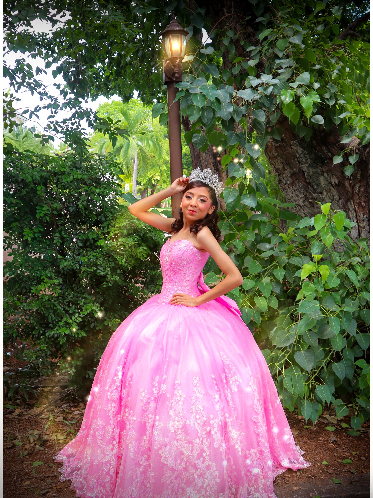
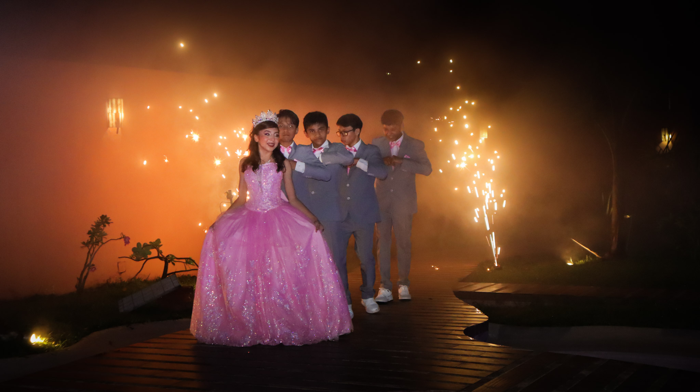
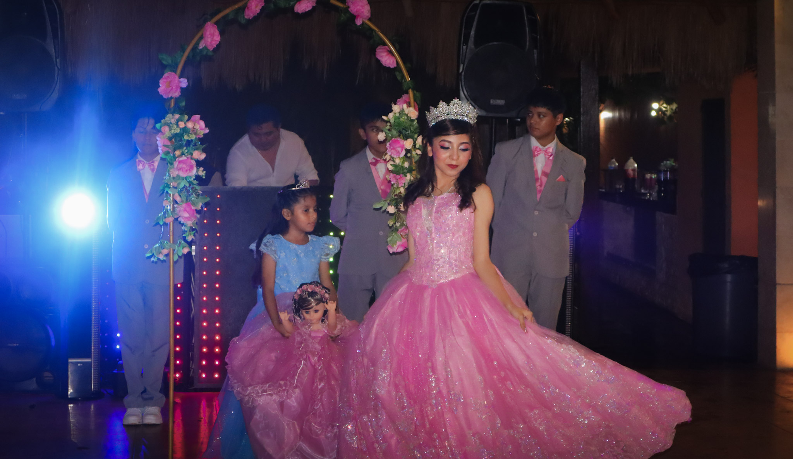
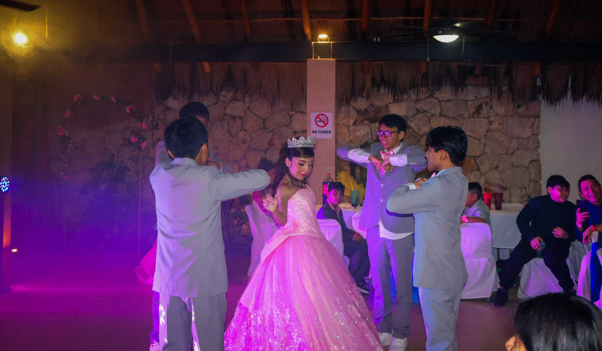
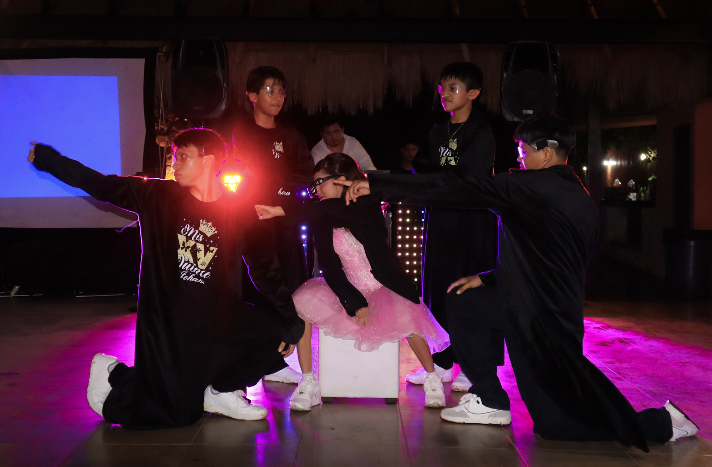
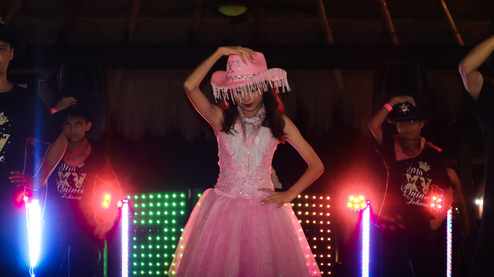
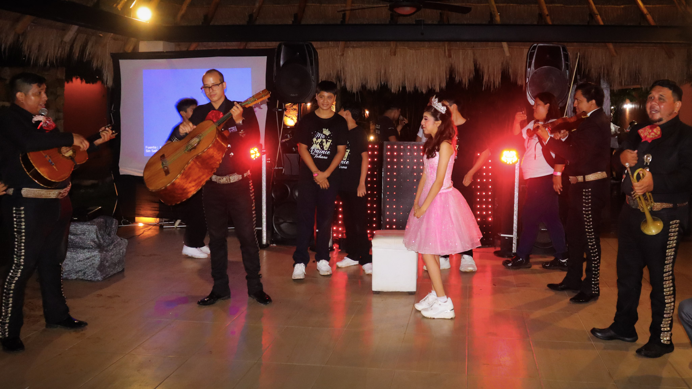

Video 01
Crónica de los XV Años
Una selección de fotografías y momentos de la vida de Johana presentados cronológicamente.

Bienvenidos a la galería especial de los XV años de Johana. Aquí podrás revivir los momentos más importantes de esta celebración a través de fotografías y videos.

Importante: Esta es una página temporal creada para la entrega de los recuerdos audiovisuales de los XV años de Johana. Se recomienda descargar fotografías y videos lo antes posible, ya que los enlaces y el acceso a esta página podrían dejar de estar disponibles posteriormente.
Disfruta nuevamente de cada uno de los momentos especiales de esta celebración.
Una selección de fotografías y momentos de la vida de Johana presentados cronológicamente.
Los momentos más significativos de la ceremonia religiosa.

Una recopilación de los momentos más especiales de toda la celebración.

El momento en que Johana hace su entrada y es presentada ante todos sus invitados.

Un momento especial dedicado a Johana durante la celebración.

Una de las presentaciones más esperadas de la noche.

Una presentación llena de energía y movimiento.

Una coreografía emocionante y llena de acrobacias.

Una segunda presentación moderna protagonizada por Johana.

Los últimos momentos de la celebración junto al mariachi, la música y todos los invitados.

Una selección de momentos especiales de los XV años. Puedes ver la galería completa y descargar tus fotografías.


Vuelve a consultar la invitación original de esta celebración.
Conoce más de nuestro trabajo audiovisual, fotografía y contenido visual.